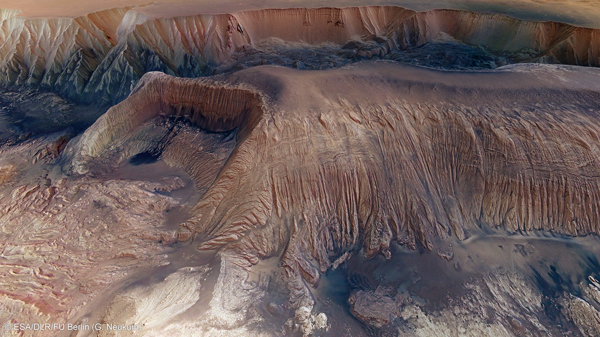

De Ontdekking

Omdat Mars gedurende bepaalde perioden met het blote oog zichtbaar is, was men in zich in de oudheid al bewust van het bestaan van Mars. Er wordt gerefereerd naar de planeet in teksten (uiteraard onder een andere naam) uit Mesopotamië. De oude Egyptenaren steldden al vast dat Mars een bewegend hemellichaam was en sinds de zestiende eeuw voor Christus waren zij al bekend met de retrograad van Mars. Gedurende het Nieuw-Babylonische rijk (626-539 voor Christus) maakten Babylonische astronomen al systematische observaties over de bewegingen van de hun bekende planeten. Bij de oude Grieken was de planeet ook bekend. Onder andere de Griekse filosoof Aristoteles zag al in dat Mars achter de maan 'verdween' en zodoende verderweg moest staan dan de maan. Een van de belangrijkste werken uit de oudheid met betrekking tot astronomie was de Almahest van Ptolemaeus (100-170 na Christus), die die, incorrect, de Aarde als het middelpunt van ons zonnestelsel beschreef, met de planeten daar omheen draaiend. Deze theorie bleef tot ver in de middeleeuwen geaccepteerd. Ook bij de Chinezen was Mars al in minstens de vierde eeuw voor Christus bekend.
De eerste gedetailleerde ontdekkingen wachtten tot de uitvinding van de telescoop. Belangrijke vindingen werden bijvoorbeeld gedaan Galileo Galilei in 1610, Giovanni Cassini in 1672 en Christiaan Huygens in de zeventiende eeuw. Pas in de negentiende eeuw had men beschikking over betere telescopen en kon men meer details van het oppervlakte van Mars zien.